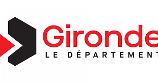
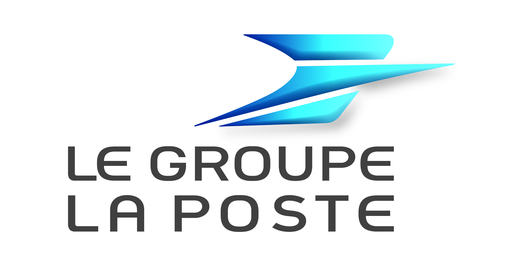
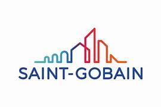
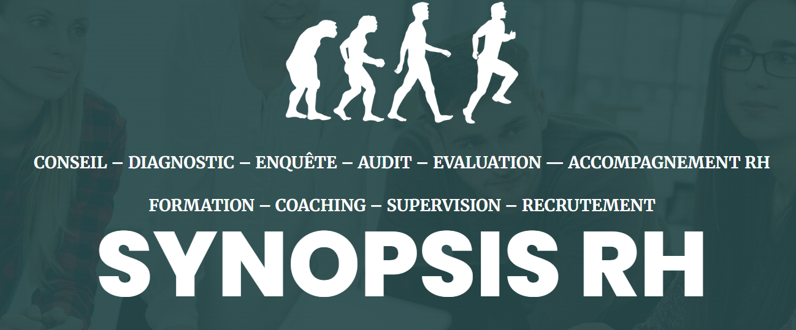
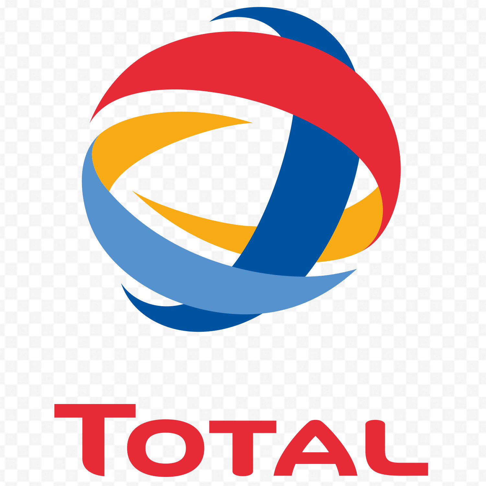
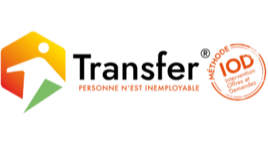

Psychologie du travail & data
Conseil, formation et analyse de données pour transformer le travail.
Docteur en psychologie sociale du travail et des organisations et psychologue du travail & des organisations. J'interviens depuis Bordeaux partout en France pour accompagner les organisations dans leurs enjeux humains, sociaux et data.
Conseil
Diagnostic, stratégie, accompagnement du changement.
Formation
Sessions sur mesure pour managers et équipes.
Data
Analyses avancées pour décider avec fiabilité.
Interventions
Bordeaux + France entière
Domaines
QVT, performance collective, leadership, risques psychosociaux, décision data
Formats
Ateliers, conférences, conseil, mission long terme
Expérience
Quelques organisations avec lesquelles j'ai collaboré.





